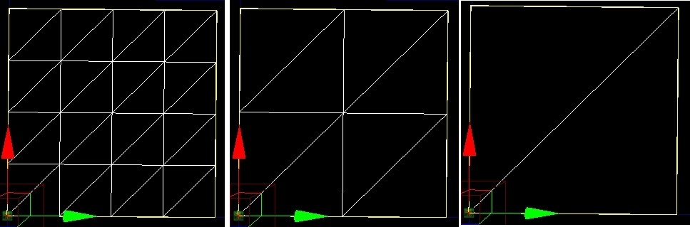

UDN
Search public documentation:
UsingTerrain
日本語訳
中国翻译
한국어
Interested in the Unreal Engine?
Visit the Unreal Technology site.
Looking for jobs and company info?
Check out the Epic games site.
Questions about support via UDN?
Contact the UDN Staff
中国翻译
한국어
Interested in the Unreal Engine?
Visit the Unreal Technology site.
Looking for jobs and company info?
Check out the Epic games site.
Questions about support via UDN?
Contact the UDN Staff
UE3 Home > Terrain System > Using Terrain
Using Terrain
Overview
Terrain Properties
Terrain
NumPatchesX and NumPatchesY
The number of patches contained in a single row of the terrain is determined by NumPatchesX. The number of patches in a single column is NumPatchesY. Note that if you make these dimensions smaller, it will destroy the height-map/alpha-map and other data which is no longer used by the patches. If you make the dimensions larger, it simply fills in the new height-map/alpha-map and other data with zero. The total size of the terrain can be determined with the following formulas: SizeX = NumPatchesX * DrawScale * DrawScale3D.X SizeY = NumPatchesY * DrawScale * DrawScale3D.YMaxTesselationLevel
This is the maximum number of patches (row and column) that will be collapsed into a single quad when tessellating out detail. Must be a power of two, 1 <= MaxTesselationLevel <= 16. Note that this means the values used for NumPatchesX and NumPatchesY must be multiples of MaxTesselationLevel. As an example, the following shot shows a terrain with NumPatchesX of 4, NumPatchesY of 4 and a MaxTesselationLevel of 4 at each of the possible 3 tessellation levels. The leftmost is at full detail, with a 4x4 grid of patches present. The middle is at half, displaying a 2x2 grid of collapsed patches. The rightmost is at the lowest level, showing a single quad that covers the original area. MinTessellationLevel
This is the minimum number of ‘sub-quads’ (row and column) to collapse to when tessellating out detail. Note that if the value is equal to MaxTesselationLevel, the terrain will not tessellate out any detail.MaxComponentSize
For the engine, the terrain is split up into rectangular groups of patches called terrain components for rendering. MaxComponentSize is the maximum number of fully detessellated quads in a single row/column of a terrain component. (The maximum number of physical patches at full tessellation detail in a single row/column of a terrain component is simply this number times the MaxTesselationLevel.) Generally, all components will be MaxComponentSize quads square, but on terrains with a patch resolution which isn't a multiple of MaxComponentSize quads, there will be some components along the edges which are smaller. This is limited by the MaxTesselationLevel to prevent the vertex buffer for a fully tessellated component from being > 65536 vertices. For a MaxTesselationLevel of 16, MaxComponentSize is limited to <= 14.For a MaxTesselationLevel of 8, MaxComponentSize is limited to <= 30.
Each terrain component is a distinct DrawMesh call. Depending on the complexity of the material applied, which is a result of the layers applied to the patch of terrain as well as the tessellation level rendered, components will have varying performance costs. If a particular layer is applied to a single terrain component, other components do not pay for it. Note that it may be somewhat difficult to see when a layer is actually 'spilling' into a neighboring component. The highlight-overlay exposed via the terrain browser or property window can be helpful in spotting these cases. Viewing MaxComponentSize: To see the component sizes on the terrain, check the flag on the viewport Show Flags menu - "Terrain Patches". When enabled, terrain will render yellow boxes around each component in the terrain. MaxComponentSize indicates the number of quads that will be contained in a single UTerrainComponent instance for the terrain - the higher the number, the fewer 'sub-pieces' of terrain. The number of components is determined by the following: NumSectionsX = ((NumPatchesX / MaxTesselationLevel) + MaxComponentSize - 1) / MaxComponentSize NumSectionsY = ((NumPatchesY / MaxTesselationLevel) + MaxComponentSize - 1) / MaxComponentSize